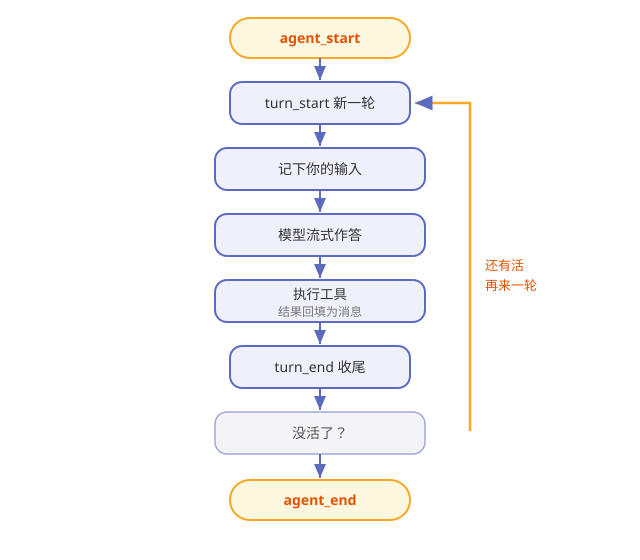

第5章 一次对话的完整旅程：agent loop 与事件流¶
阅读提示 本章是全书的主干道：你敲下一句话后，Pi 体内到底发生了什么。我们把这段旅程放慢成一帧一帧。约 10 分钟。
一个盯进度的项目经理¶
把 Pi 的运行时想象成一位项目经理。你跟他说"把这事办了"，他不会只回你一句"好的"，而是：
安排一步 → 盯着干完 → 看结果 → 决定下一步 → ……直到没事可干，才回来向你汇报。
这个"安排—盯—看—再安排"的循环，就是 agent loop（agent 循环）。它是 pi-agent-core 包的心脏。
先认识"一轮"：turn¶
旅程的基本单位叫 turn（一轮）：
一轮 = 一次调用大模型 + 这一轮里它发起的所有工具执行。
你的一句话，可能引发好几轮：第一轮模型说"我先读一下文件"，读完第二轮说"我要改这里"，改完第三轮说"好了"。每一轮都是一个完整的"调模型 + 跑工具"循环。
完整事件流：一帧一帧看¶
Pi 把整个旅程拆成一串事件（event），按时序往外发。图5-1 是一次带工具调用的对话：

图5-1 一次对话的事件流
表5-1 事件顺序速查
| 顺序 | 事件 | 发生了什么 |
|---|---|---|
| 1 | agent_start | 整个任务开始 |
| 2 | turn_start | 新一轮开始 |
| 3 | message_start/end | 你的输入被记下 |
| 4 | message_start → update… → end | 模型流式地答（update 是一帧帧增量） |
| 5 | tool_execution_start/update/end | 模型申请的工具被执行 |
| 6 | message_start/end | 工具结果作为新消息入列 |
| 7 | turn_end | 本轮收尾 |
| 8 | （回到 2 或走向 9） | 还有活就再来一轮 |
| 9 | agent_end | 没活了，任务结束 |
记住这条主线：模型答 → 若申请工具就执行 → 结果回填 → 再看要不要下一轮。
调模型前，上下文先过一道"管道"¶
每轮要调模型前，Pi 会把手头的消息过一道管道再发出去：
表5-2 上下文管道三步
| 步骤 | 干什么 |
|---|---|
| transformContext | 可选：裁剪 / 注入上下文（比如压缩旧对话） |
| convertToLlm | 过滤掉只给界面看的消息，把自定义类型转成模型认的格式 |
| 发给 LLM | 变成第 4 章讲的统一请求 |
阅读提示 "有些消息只给你看、不给模型看"——这个设计让 Pi 能在界面上画很多东西，却不浪费模型的上下文。第 12 章讲界面时还会碰到它。
工具是并行还是串行¶
一轮里模型可能同时申请好几个工具。Pi 默认并行执行它们（快），但允许例外：
表5-3 两种执行模式
| 模式 | 行为 | 适合 |
|---|---|---|
| parallel（默认） | 预检串行、执行并行 | 互不干扰的活 |
| sequential | 一个接一个 | 有先后依赖的活 |
你可以全局设，也可以给某个工具单独指定。只要一批里有一个要求串行，整批就都串行——宁可慢，不出乱。
两种"加塞"：steer 与 followUp¶
对话进行中，你可能想插话或让它多干点。Pi 给了两个队列：
表5-4 两种加塞
| 机制 | 什么时候生效 | 体感 |
|---|---|---|
| steer | 当前工具跑完后、下一轮开始前注入 | "中途递个条子" |
| followUp | agent 本想收工时，排队让它继续 | "别停，再干一件" |
交互模式下，这对应你按 Enter（正常发）和 Alt+Enter（加塞）的区别。
🧪 本章实验¶
实验 5-1 ★｜数一数几轮 目标：亲眼看到"多轮"。 步骤：让 Pi 干一件需要读文件再回答的事，观察它先读后答。 验收：你能说出"这用了至少两轮"。
实验 5-2 ★★｜中途加塞 目标：体验 steer。 步骤：Pi 干活中途，用加塞方式补一句要求。 验收：它在当前步骤后采纳了你的补充，而不是从头再来。
🤔 思考题¶
- ★ 为什么把旅程拆成"事件流"，而不是直接返回最终结果？
- ★★ "一批里有一个串行就整批串行"，为什么这样设计更安全？
- ★★ steer 和 followUp 的区别，本质上是"插队"插在哪？
📝 小结¶
- agent loop 是心脏——安排→盯→看→再安排的循环
- 一轮 = 一次调模型 + 其工具执行——一句话常引发多轮
- 事件流有固定时序——agent_start 到 agent_end，中间是 turn 的循环
- 上下文先过管道再发模型——能裁剪、能过滤界面消息
- 工具默认并行——有串行需求就整批串行
- steer / followUp 两种加塞——中途递条子 / 收工时续活
主干道走通了。下一章聚焦其中"动手"那一段——Pi 的工具。➡️ 第6章 四只手脚：内置工具与工具执行